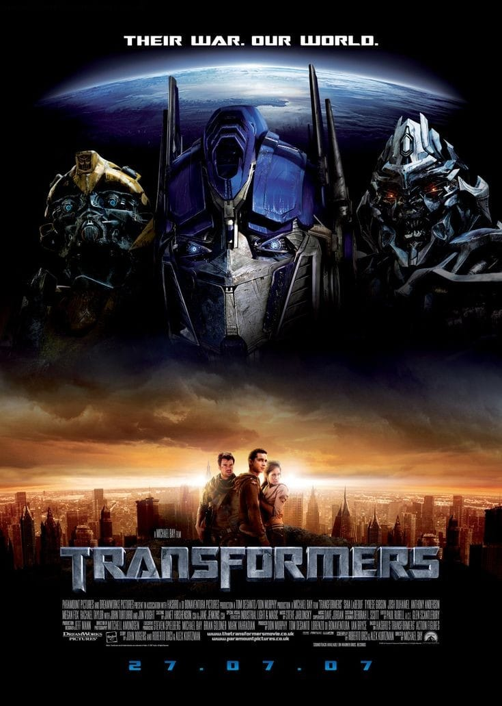
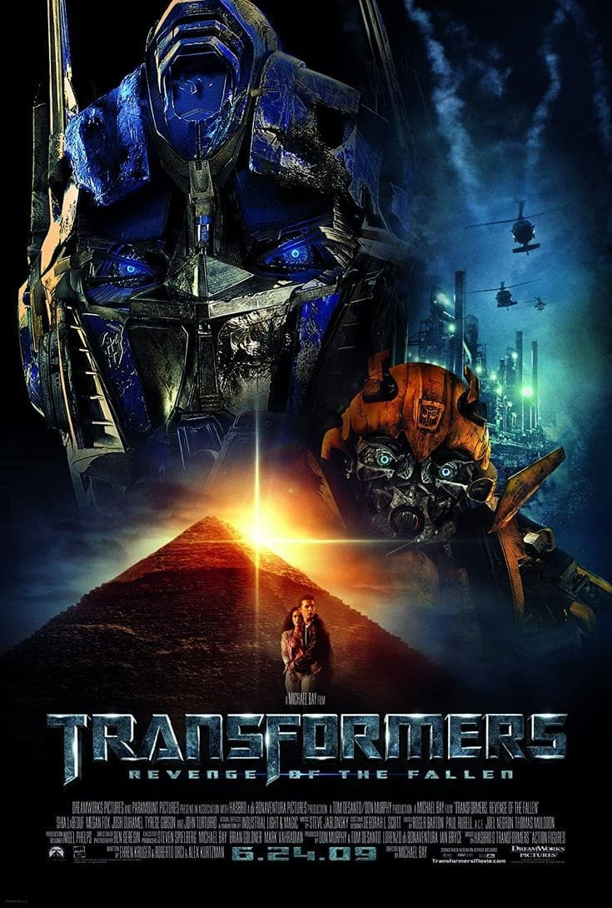
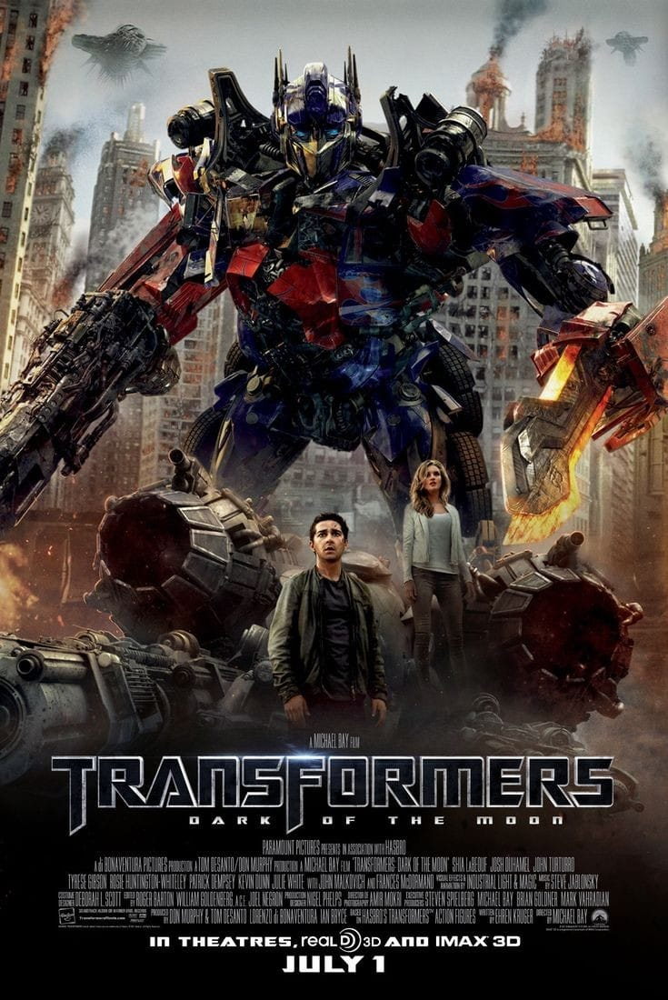
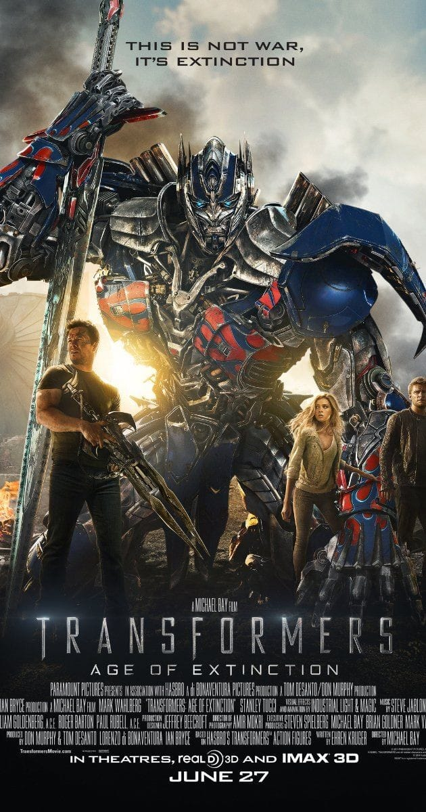
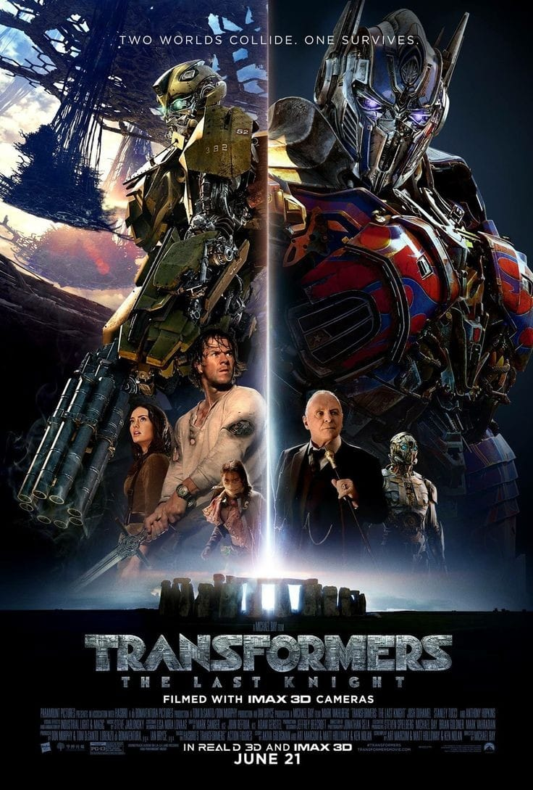
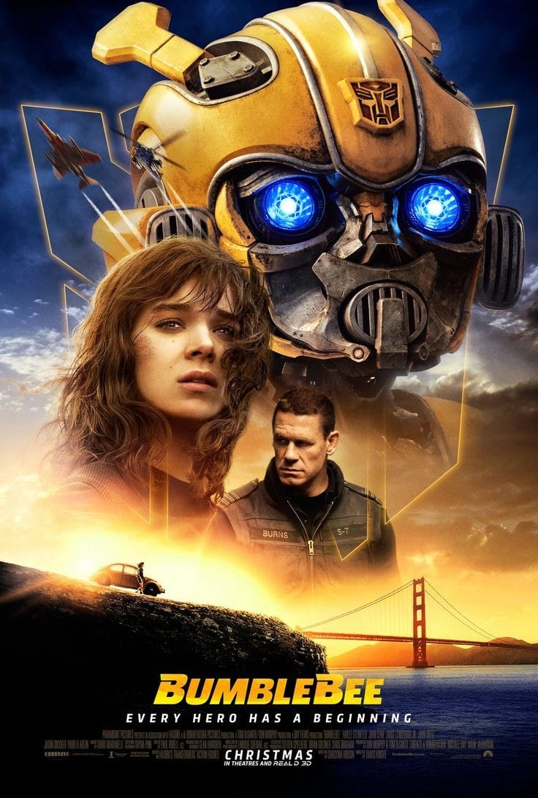
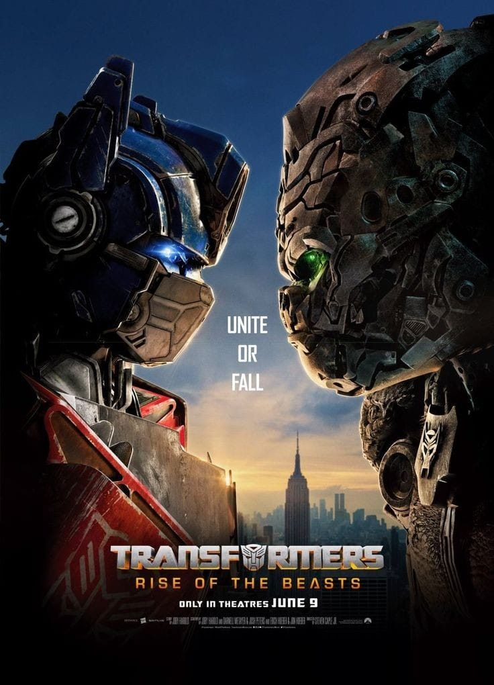

Urutan Film Transformers Bedasarkan Tahun Rilis
Urutan film Transformers Berdasarkan Tahun Rilis
Transformers adalah film fiksi ilmiah Amerika yang diangkat dari kisah Transformers tahun 1984. Film ini memadukan CGI dengan laga hidup.
Slogan film ini sangat terkenal, yaitu “Their war, our world” yang memiliki arti “Perang mereka, dunia kami”.
Berikut ini merupakan urutan film Transformers berdasarkan tahun rilis :
1. Transformers (2007)

2. Transformers: Revenge Of The Fallen (2009)

3. Transformers: Dark Of The Moon (2011)

4. Transformers: Age Of Extinction (2014)

5. Transformers: The Last Knight (2017)

6. Bumblebee (2018)

7. Transformers: Rise Of The Beasts (2023)

Kalian bisa menonton film Transformers secara legal melalui platform Netflix